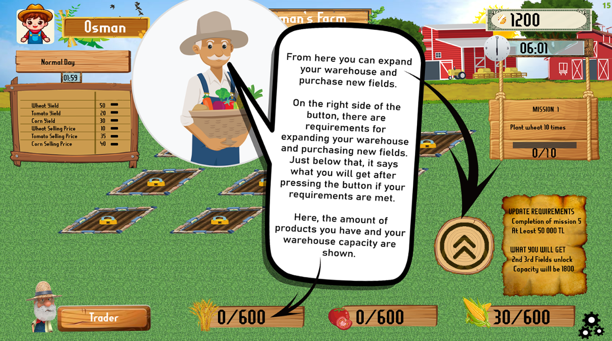
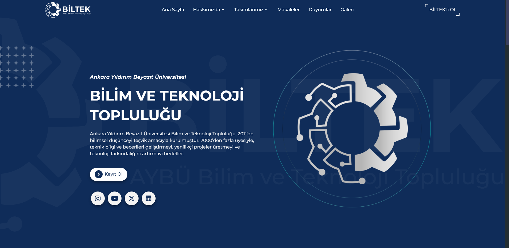

My Projects

Farming Management Game
A simulation game where players manage agricultural resources strategically. Built using SFML, C, and XML.
Technologies: C, SFML, XML
View on GitHub
Automatic Course Planner
A web application that generates course schedules using Angular and database integration. Developed as a team project using HTML, CSS, JS, and Angular.
Technologies: Angular, HTML, CSS, JS
View on GitHub
Science and Technology Society Website
Designed and developed a responsive website for the university club, focusing on usability, event display, and modern interface aesthetics.
Technologies: HTML, CSS, Team Coordination
Visit Website